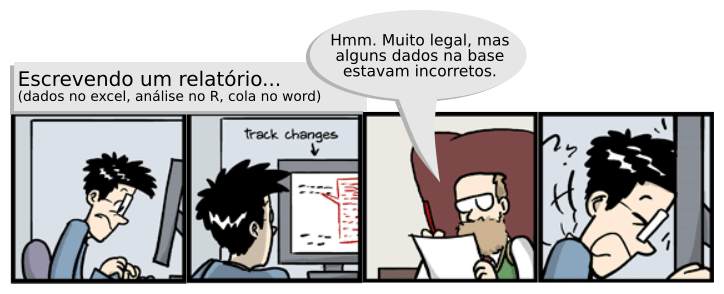
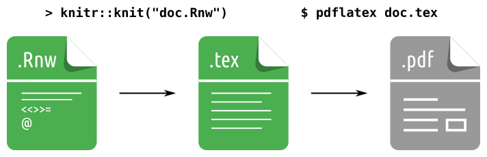
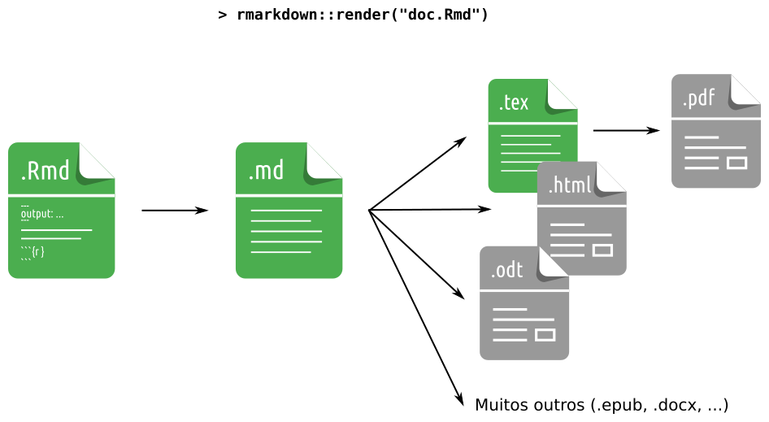
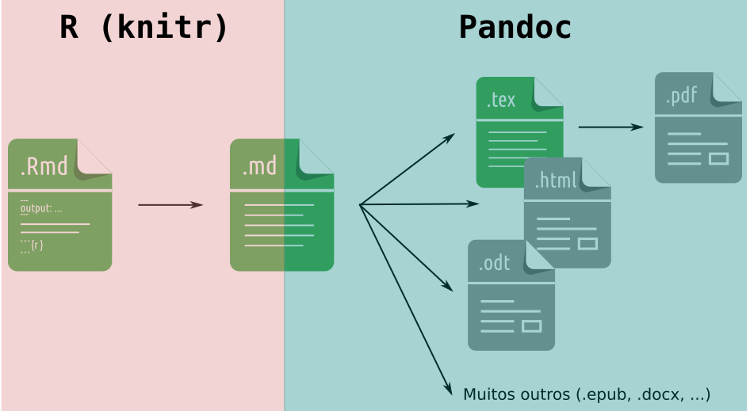
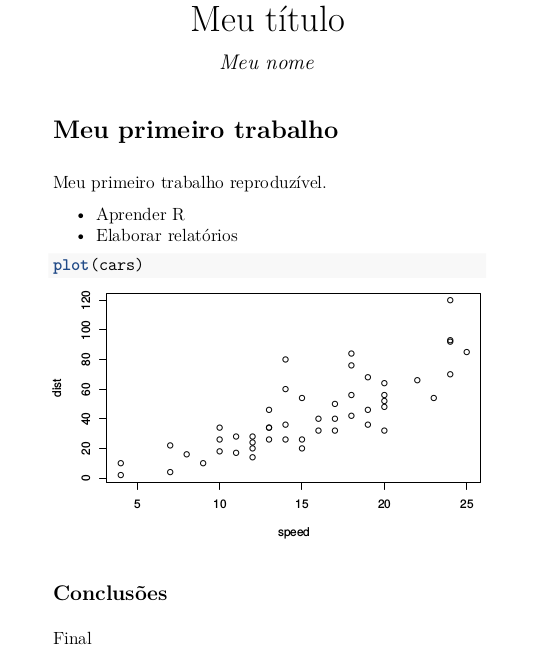

Sistema de versionamento Git

Eduardo Elias Ribeiro Junior
Semana da Estatística da UFPR - 2017
Dinâmico: aquele que se modifica continuamente, que evolui; que pressupõe movimento, mudança.
Josefino e sua experiência no mercado de trabalho.

Sweave (em 2002 por Friedrich Leisch)knitr;rmarkdown;down (e agregados)down (e agregados)
.pdf são gerados;


knitr como as interpretadas pelo pandoc;knitr referem-se as passadas ao argumento output;pandoc;O YAML de doc.Rmd sendo:
---
output:
html_document:
toc: true
theme: "united"
fig_height: 6
---é interpretado pelo knitr como:
rmarkdown::render(input = doc.Rmd',
output_format = html_document(
toc = TRUE,
theme = "united",
fig_height = 6)).html e .pdf);.pdf);.html);.html);shower (.html);remark.js (.html);reveal.js (.html);blogdown;hugo;blogdown
.
└── meusite
├── config.[yaml, toml]
├── content
├── layouts
├── public
└── themes